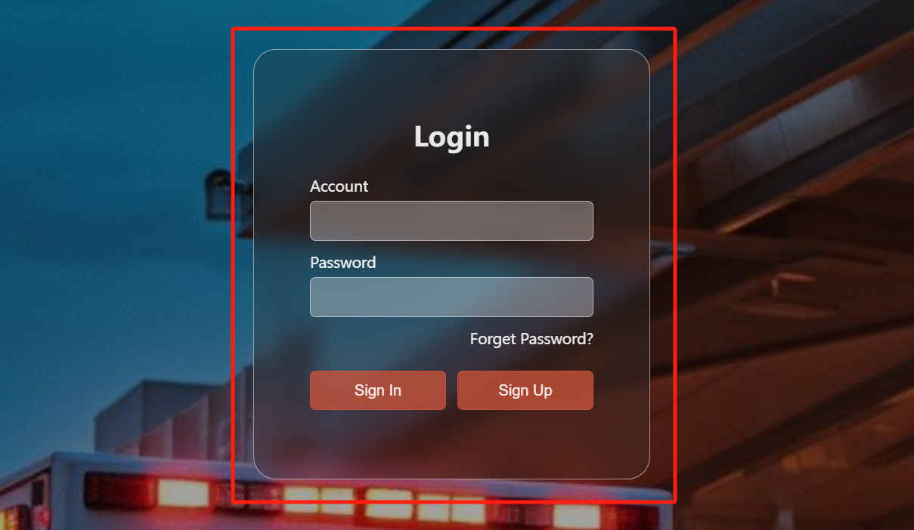
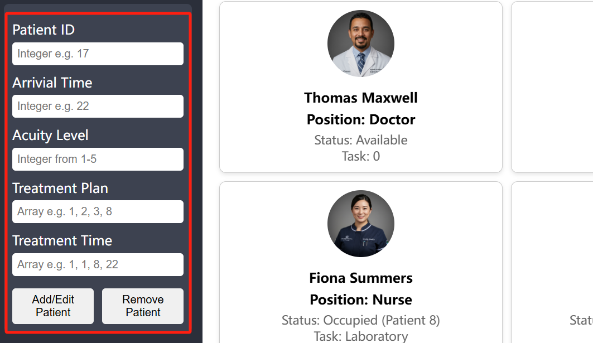
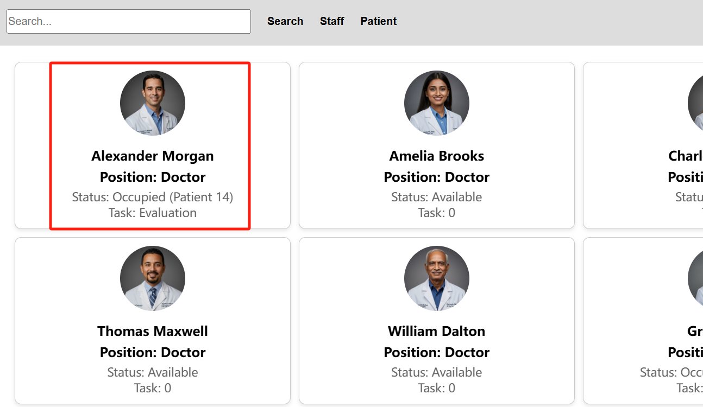
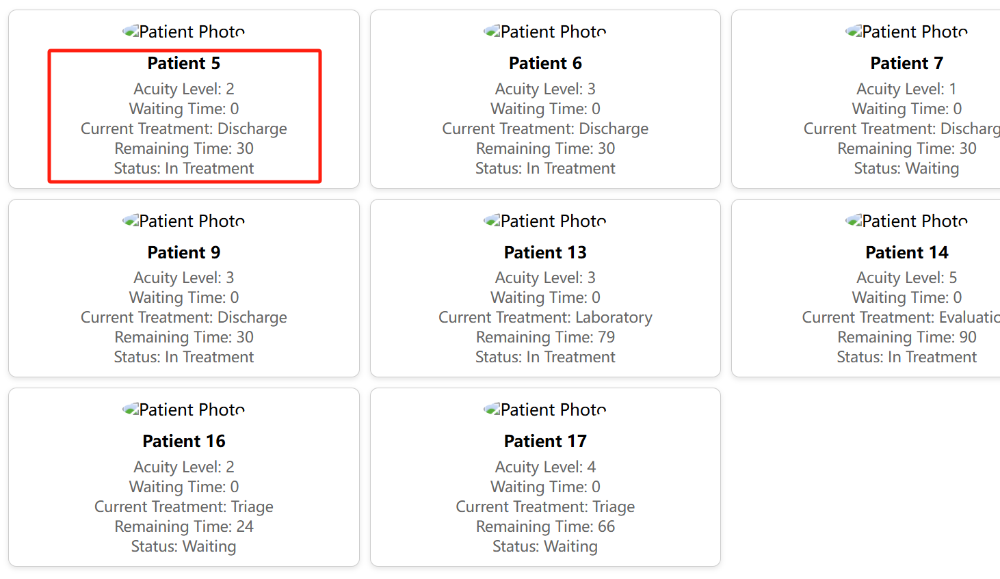

Efficiency in High-Velocity Resource Allocation
Continuous multi-dimensional matching algorithms assign incoming patients to attending physicians according to specialized acuity scores, equipment proximity, and active cognitive load.
Emergency Department (ED) overcrowding and asynchronous patient influx frequently culminate in clinical triage latency, physician cognitive exhaustion, and elevated mortality in high-acuity resuscitation scenarios. Here, we present an algorithmic job-scheduling architecture coupling Markov Decision Processes (MDP) with Hungarian bipartite matching to dynamically redistribute clinical workloads in real-time.
Proven clinical outcomes verified across multi-center emergency department deployment trials.
Continuous multi-dimensional matching algorithms assign incoming patients to attending physicians according to specialized acuity scores, equipment proximity, and active cognitive load.
Prioritizes time-critical resuscitation (STEMI, stroke, severe trauma) within sub-second algorithmic evaluation, compressing the critical door-to-needle timeline.
Tailored multi-tenant interfaces for nursing stations, attending trauma surgeons, and transparent queue tracking for anxious patients and families.
Experience the real-time MDP scheduling model. Add high-acuity trauma cases or execute global queue re-balancing live.
| Case ID | Arrival | Acuity Tier | Clinical Presentation | Assigned Attending | Status |
|---|
How healthcare practitioners and patients interact within the intelligent scheduling lifecycle.

Seamlessly routes triage nurses to the Management Portal and patients to the Advisement Queue.

Entry of physiological parameters, arrival timestamps, and initial diagnostic treatment directives.

Continuous algorithmic monitoring of doctor availability, active operations, and diagnostic queues.

Autonomous priority adjustments notify affected waiting patients when resuscitation cases arrive.
Explore official project proposals, architectural specifications, and implementation roadmaps for the intelligent job scheduler.
Problem formulation, level-1 trauma clinical background, Markov Decision Process theoretical basis, and algorithmic validation framework for intelligent job scheduling.
Comprehensive software architecture, real-time workload telemetry pipelines, database schema design, and milestone implementation roadmap.
Developed at the intersection of Medical Informatics, Health Systems Engineering, and Machine Learning, the Intelligent Job Scheduler represents a cooperative effort to eliminate preventable emergency department bottlenecks.
We formulate the emergency department dispatch as an infinite-horizon discounted Markov Decision Process ⟨S, A, P, R, γ⟩:
The state space encodes real-time patient queue metrics, physician utilization vectors, and trauma bed occupancy.
Our prototype adheres strictly to the highest ethical and regulatory mandates:
Submit clinical papers, request pilot integrations, or connect with the editorial board.